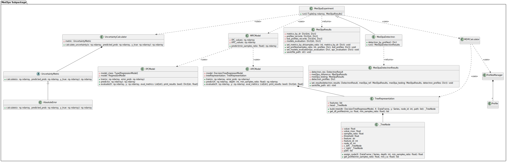

med3pa subpackage
Overview
The med3pa subpackage represents a modularized and enhanced version of the original “MED3PA code”,
designed to augment clinical decision-making by providing a robust framework for evaluating and managing model uncertainty in healthcare applications.
It introduces a sophisticated approach to assessing model performance that transcends traditional global metrics,
focusing instead on the concept of predictive confidence at both individual and aggregated levels.
Key Components:
Individualized Predictive Confidence (IPC): This component employs
regressionmodels to estimate the predictive confidence for individual data points. The IPC model, adaptable with various regression algorithms likeRandom Forest, is particularly aimed at quantifying the uncertainty associated with each prediction, allowing for a detailed analysis of model reliability.Aggregated Predictive Confidence (APC): Contrasting with IPC, APC focuses on groups of similar data points, using a
decision tree regressorto analyze uncertainty in aggregated profiles. This method helps identify patterns or groups where the model’s performance might be suboptimal, facilitating targeted improvements.Mixed Predictive Confidence (MPC): This model combines results from IPC and APC to derive a composite measure of confidence. MPC values are then used to further scrutinize the model’s performance and to identify problematic profiles where the base model might fail.
Advanced Analysis with MDR:
The med3pa approach innovatively employs metrics by declaration rate (MDR), which evaluates model metrics at various confidence thresholds. This methodology not only highlights how the model performs across different confidence levels but also pinpoints specific profiles (groups of data points) that might be problematic. By doing so, it aids in the proactive identification and mitigation of potential model failures.
Extensibility for Integration:
Our package is meticulously designed to facilitate and accommodate integration with other methods, such as Detectron.
This extensibility allows med3pa to assess shifts in data distributions, especially focusing on the problematic profiles identified through MPC.
Such integration enhances the comprehensive assessment of how external changes or shifts might affect model reliability over time,
ensuring that the model remains robust and accurate in dynamic clinical environments.
In essence, med3pa is dedicated to advancing safer clinical deployments by providing tools that not only predict outcomes but also critically analyze and improve the understanding of where and why predictions might fail.
This helps ensure that deployed models are not just effective but are also reliable and trustworthy in real-world settings.
this subpackage includes the following classes:
uncertainty module
This module handles the computation of uncertainty metrics.
It defines an abstract base class UncertaintyMetric and concrete implementations such as AbsoluteError for calculating uncertainty based on the difference between predicted probabilities and actual outcomes.
An UncertaintyCalculator class is provided, which allows users to specify which uncertainty metric to use,
thereby facilitating the use of customized uncertainty metrics for different analytical needs.
- class MED3pa.med3pa.uncertainty.AbsoluteError[source]
Bases:
UncertaintyMetricConcrete implementation of the UncertaintyMetric class using absolute error.
- calculate(predicted_prob: ndarray, y_true: ndarray) ndarray[source]
Calculates the absolute error between predicted probabilities and true labels, providing a measure of prediction accuracy.
- Parameters:
x (np.ndarray) – Input features (not used in this metric but included for interface consistency).
predicted_prob (np.ndarray) – Predicted probabilities.
y_true (np.ndarray) – True labels.
- Returns:
Absolute errors between predicted probabilities and true labels.
- Return type:
np.ndarray
- class MED3pa.med3pa.uncertainty.UncertaintyCalculator(metric: UncertaintyMetric)[source]
Bases:
objectClass for calculating uncertainty using a specified uncertainty metric.
- calculate_uncertainty(x: ndarray, predicted_prob: ndarray, y_true: ndarray) ndarray[source]
Calculates uncertainty for a set of predictions using the configured uncertainty metric.
- Parameters:
x (np.ndarray) – Input features.
predicted_prob (np.ndarray) – Predicted probabilities.
y_true (np.ndarray) – True labels.
- Returns:
Uncertainty values for each prediction, computed using the specified metric.
- Return type:
np.ndarray
- class MED3pa.med3pa.uncertainty.UncertaintyMetric[source]
Bases:
ABCAbstract base class for uncertainty metrics. Defines the structure that all uncertainty metrics should follow.
- abstract calculate(predicted_prob: ndarray, y_true: ndarray) ndarray[source]
Calculates the uncertainty metric based on input observations, predicted probabilities, and true labels.
- Parameters:
x (np.ndarray) – Input observations.
predicted_prob (np.ndarray) – Predicted probabilities by the model.
y_true (np.ndarray) – True labels.
- Returns:
An array of uncertainty values for each prediction.
- Return type:
np.ndarray
models module
Defines the models used within the med3pa framework. It includes classes for Individualized Predictive Confidence (IPC) models that predict uncertainty at an individual level, where the regressor type can be specified by the user. Additionally, it includes Aggregated Predictive Confidence (APC) models that predict uncertainty for groups of similar data points, and Mixed Predictive Confidence (MPC) models that combine the predictions from IPC and APC models.
- class MED3pa.med3pa.models.APCModel(features: list, params: Optional[Dict[str, Any]] = None)[source]
Bases:
objectAPCModel class used to predict the Aggregated predicted confidence. ie, the base model confidence for a group of similar data points.
- default_params = {'max_depth': 3, 'min_samples_leaf': 1, 'random_state': 54288}
- evaluate(X: ndarray, y: ndarray, eval_metrics: List[str], print_results: bool = False) Dict[str, float][source]
Evaluates the model using specified metrics.
- Parameters:
X (np.ndarray) – observations for evaluation.
y (np.ndarray) – True labels for evaluation.
eval_metrics (List[str]) – Metrics to use for evaluation.
print_results (bool) – Whether to print the evaluation results.
- Returns:
A dictionary with metric names and their evaluated scores.
- Return type:
Dict[str, float]
- optimize(param_grid: dict, cv: int, x: ndarray, error_prob: ndarray, sample_weight: ndarray = None) None[source]
Optimizes the model parameters using GridSearchCV.
- Parameters:
param_grid (Dict[str, Any]) – The parameter grid to explore.
cv (int) – The number of cross-validation folds.
x (np.ndarray) – Training data.
y (np.ndarray) – Target data.
sample_weight (Optional[np.ndarray]) – Weights for the training samples.
- predict(X: ndarray, depth: int = None, min_samples_ratio: float = 0) ndarray[source]
Predicts error probabilities using the tree representation for the given input observations.
- Parameters:
x (np.ndarray) – Feature matrix for which to predict error probabilities.
depth (Optional[int]) – The maximum depth of the tree to use for predictions.
- Returns:
Predicted error probabilities based on the aggregated confidence levels.
- Return type:
np.ndarray
- classmethod supported_models_params() Dict[str, Dict[str, Any]][source]
Returns a dictionary containing the supported models and their parameters and grid search parameters.
- Returns:
- A dictionary with model names as keys and another dictionary as value containing
’params’ and ‘grid_search_params’ for each model.
- Return type:
Dict[str, Dict[str, Any]]
- supported_params = {'DecisionTreeRegressor': {'grid_params': [{'name': 'criterion', 'type': 'string', 'default': ['squared_error', 'friedman_mse', 'absolute_error', 'poisson']}, {'name': 'splitter', 'type': 'string', 'default': ['best', 'random']}, {'name': 'max_depth', 'type': 'int', 'default': [None, 10, 20, 30, 40, 50]}, {'name': 'min_samples_split', 'type': 'int', 'default': [2, 5, 10]}, {'name': 'min_samples_leaf', 'type': 'int', 'default': [1, 2, 4]}, {'name': 'min_weight_fraction_leaf', 'type': 'float', 'default': [0.0, 0.1, 0.2]}, {'name': 'max_features', 'type': 'string', 'default': [None, 'auto', 'sqrt', 'log2']}, {'name': 'max_leaf_nodes', 'type': 'int', 'default': [None, 10, 20, 30]}, {'name': 'min_impurity_decrease', 'type': 'float', 'default': [0.0, 0.1, 0.2]}, {'name': 'ccp_alpha', 'type': 'float', 'default': [0.0, 0.01, 0.1]}], 'params': [{'name': 'criterion', 'type': 'string', 'default': 'squared_error', 'choices': ['squared_error', 'friedman_mse', 'absolute_error', 'poisson']}, {'name': 'splitter', 'type': 'string', 'default': 'best', 'choices': ['best', 'random']}, {'name': 'max_depth', 'type': 'int', 'default': None}, {'name': 'min_samples_split', 'type': 'int', 'default': 2}, {'name': 'min_samples_leaf', 'type': 'int', 'default': 1}, {'name': 'min_weight_fraction_leaf', 'type': 'float', 'default': 0.0}, {'name': 'max_features', 'type': 'string', 'default': None, 'choices': [None, 'auto', 'sqrt', 'log2']}, {'name': 'max_leaf_nodes', 'type': 'int', 'default': None}, {'name': 'min_impurity_decrease', 'type': 'float', 'default': 0.0}, {'name': 'ccp_alpha', 'type': 'float', 'default': 0.0}]}}
- class MED3pa.med3pa.models.IPCModel(model_name: str = 'RandomForestRegressor', params: Optional[Dict[str, Any]] = None)[source]
Bases:
objectIPCModel class used to predict the Individualized predicted confidence. ie, the base model confidence for each data point.
- default_params = {'random_state': 54288}
- evaluate(X: ndarray, y: ndarray, eval_metrics: List[str], print_results: bool = False) Dict[str, float][source]
Evaluates the model using specified metrics.
- Parameters:
X (np.ndarray) – observations for evaluation.
y (np.ndarray) – True labels for evaluation.
eval_metrics (List[str]) – Metrics to use for evaluation.
print_results (bool) – Whether to print the evaluation results.
- Returns:
A dictionary with metric names and their evaluated scores.
- Return type:
Dict[str, float]
- optimize(param_grid: dict, cv: int, x: ndarray, error_prob: ndarray, sample_weight: ndarray = None) None[source]
Optimizes the model parameters using GridSearchCV.
- Parameters:
param_grid (Dict[str, Any]) – The parameter grid to explore.
cv (int) – The number of cross-validation folds.
x (np.ndarray) – Training data.
y (np.ndarray) – Target data.
sample_weight (Optional[np.ndarray]) – Weights for the training samples.
- predict(x: ndarray) ndarray[source]
Predicts error probabilities for the given input observations using the trained model.
- Parameters:
x (np.ndarray) – Feature matrix for which to predict error probabilities.
- Returns:
Predicted error probabilities.
- Return type:
np.ndarray
- classmethod supported_ipc_models() list[source]
Returns a list of supported IPC models.
- Returns:
A list of supported regression model names.
- Return type:
list
- classmethod supported_models_params() Dict[str, Dict[str, Any]][source]
Returns a dictionary containing the supported models and their parameters and grid search parameters.
- Returns:
- A dictionary with model names as keys and another dictionary as value containing
’params’ and ‘grid_search_params’ for each model.
- Return type:
Dict[str, Dict[str, Any]]
- supported_regressors_mapping = {'RandomForestRegressor': <class 'MED3pa.models.concrete_regressors.RandomForestRegressorModel'>}
- supported_regressos_params = {'RandomForestRegressor': {'grid_params': [{'name': 'n_estimators', 'type': 'int', 'default': [100, 200, 300, 400, 500]}, {'name': 'max_depth', 'type': 'int', 'default': [None, 10, 20, 30, 40, 50]}, {'name': 'min_samples_split', 'type': 'int', 'default': [2, 5, 10]}, {'name': 'min_samples_leaf', 'type': 'int', 'default': [1, 2, 4]}, {'name': 'max_features', 'type': 'string', 'default': ['auto', 'sqrt', 'log2']}, {'name': 'bootstrap', 'type': 'bool', 'default': [True, False]}], 'params': [{'name': 'n_estimators', 'type': 'int', 'default': 100}, {'name': 'criterion', 'type': 'string', 'choices': ['squared_error', 'absolute_error', 'poisson'], 'default': 'squared_error'}, {'name': 'max_depth', 'type': 'int', 'default': None}, {'name': 'min_samples_split', 'type': 'int', 'default': 2}, {'name': 'min_samples_leaf', 'type': 'int', 'default': 1}, {'name': 'min_weight_fraction_leaf', 'type': 'float', 'default': 0.0}, {'name': 'max_features', 'type': 'string', 'choices': ['auto', 'sqrt', 'log2'], 'default': 'auto'}, {'name': 'max_leaf_nodes', 'type': 'int', 'default': None}, {'name': 'min_impurity_decrease', 'type': 'float', 'default': 0.0}, {'name': 'bootstrap', 'type': 'bool', 'default': True}, {'name': 'oob_score', 'type': 'bool', 'default': False}, {'name': 'n_jobs', 'type': 'int', 'default': None}, {'name': 'random_state', 'type': 'int', 'default': None}, {'name': 'verbose', 'type': 'int', 'default': 0}, {'name': 'warm_start', 'type': 'bool', 'default': False}, {'name': 'ccp_alpha', 'type': 'float', 'default': 0.0}, {'name': 'max_samples', 'type': 'float', 'default': None}]}}
tree module
Manages the tree representation for the APC model. It includes the TreeRepresentation class which handles the construction and manipulation of decision trees
and TreeNode class that represents a node in the tree.
This module is crucial for profiling aggregated data and extracting valuable insights
- class MED3pa.med3pa.tree.TreeRepresentation(features: list)[source]
Bases:
objectRepresents the structure of a decision tree for a given set of features.
- build_tree(dtr: DecisionTreeRegressorModel, X: DataFrame, y: Series, node_id: int = 0, path: list = ['*']) _TreeNode[source]
Recursively builds the tree representation starting from the specified node.
- Parameters:
dtr (DecisionTreeRegressorModel) – Trained decision tree regressor model.
X (DataFrame) – Training data observations.
y (Series) – Training data labels.
node_id (int) – Node ID to start building from. Defaults to 0.
path (Optional[List[str]]) – Path to the current node. Defaults to [‘*’].
- Returns:
The root node of the tree representation.
- Return type:
_TreeNode
- get_all_profiles(min_ca: float = 0, min_samples_ratio: float = 0) list[source]
Retrieves all profiles from the tree that meet the minimum criteria for value and sample ratio.
- Parameters:
min_ca (float) – Minimum value threshold for profiles. Defaults to 0.
min_samples_ratio (float) – Minimum sample ratio threshold for profiles. Defaults to 0.
- Returns:
A list of Profile instances meeting the specified criteria.
- Return type:
List[Profile]
Profiles module
Handles the management and storage of profiles derived from the tree representation.
It defines a Profile class to encapsulate metrics and values associated with a specific node in the tree and a ProfilesManager class to manage collections of profiles and track lost profiles during analysis.
- class MED3pa.med3pa.profiles.Profile(node_id: int, path: list[str], mean_value: float)[source]
Bases:
objectRepresents a profile containing metrics and values associated with a specific node.
- to_dict(save_all: bool = True)[source]
Converts the Profile instance into a dictionary format suitable for serialization.
- Returns:
- A dictionary representation of the Profile instance including the node ID, path, mean value,
metrics, and any detectron results.
- Return type:
dict
- update_detectron_results(detectron_results: dict)[source]
Updates the detectron results associated with this profile.
- Parameters:
detectron_results (dict) – The results from the Detectron experiment to be added to the profile.
- class MED3pa.med3pa.profiles.ProfilesManager(features: list[str])[source]
Bases:
objectManages the records of profiles and lost profiles based on declaration rates and minimal samples ratio.
- get_lost_profiles(min_samples_ratio=None, dr=None)[source]
Retrieves lost profiles based on the specified minimum sample ratio and dr value.
- Parameters:
dr (int) – Desired declaration rate as a percentage.
min_samples_ratio (int) – Minimum samples ratio.
- get_profiles(min_samples_ratio: int = None, dr: int = None)[source]
Retrieves profiles based on the specified minimum sample ratio and dr value.
- Parameters:
dr (int) – Desired declaration rate as a percentage.
min_samples_ratio (int) – Minimum samples ratio.
- insert_lost_profiles(dr: int, min_samples_ratio: int, profiles: list[MED3pa.med3pa.profiles.Profile])[source]
Inserts lost profiles into the records under a specific dr value and minimum sample ratio.
- Parameters:
dr (int) – Desired declaration rate as a percentage.
min_samples_ratio (int) – Minimum samples ratio.
profiles (list[Profile]) – The profiles to insert.
- insert_profiles(dr: int, min_samples_ratio: int, profiles: list[MED3pa.med3pa.profiles.Profile])[source]
Inserts profiles into the records under a specific dr value and minimum sample ratio.
- Parameters:
dr (int) – Desired declaration rate as a percentage.
min_samples_ratio (int) – Minimum samples ratio.
profiles (list[Profile]) – The profiles to insert.
- static transform_to_profiles(profiles_list: list[dict], to_dict: bool = True)[source]
Transforms a list of profile data into instances of the Profile class or dictionaries.
- Parameters:
profiles_list (list[dict]) – List of profiles data.
to_dict (bool, optional) – If True, transforms profiles to dictionaries. Defaults to True.
- Returns:
List of transformed profiles.
- Return type:
list[Union[dict, Profile]]
MDR module
Contains functionality for calculating metrics based on the predicted confidence and declaration rates (MDR).
The MDRCalculator class offers methods to assess model performance across different declaration rates, and to extract problematic profiles under specific declaration rates.
- class MED3pa.med3pa.mdr.MDRCalculator[source]
Bases:
objectClass to calculate various metrics and profiles for the MED3PA method.
- static calc_metrics_by_dr(datasets_manager: DatasetsManager, metrics_list: list, set='reference')[source]
Calculate metrics by declaration rates (DR), evaluating model performance at various thresholds of predicted accuracies.
- Parameters:
datasets_manager (DatasetsManager) – The DatasetManager containing the datasets
metrics_list (list) – List of metric names to be calculated (e.g., ‘AUC’, ‘Accuracy’).
set (str) – the set to calculate the metrics on.
- Returns:
A dictionary containing metrics computed for each declaration rate from 100% to 0%, including metrics and population percentage.
- Return type:
dict
- static calc_metrics_by_profiles(profiles_manager, datasets_manager: DatasetsManager, metrics_list, set='reference')[source]
Calculates various metrics for different profiles and declaration rates based on provided datasets.
- Parameters:
profiles_manager (ProfilesManager) – Manager handling profiles.
datasets_manager (DatasetsManager) – The DatasetManager containing the datasets
set (str) – the set to calculate the metrics on.
metrics_list (list) – List of metrics to calculate.
- static calc_profiles(profiles_manager: ProfilesManager, tree: TreeRepresentation, confidence_scores: ndarray, min_samples_ratio: int)[source]
Calculates profiles for different declaration rates and minimum sample ratios. This method assesses how profiles change across different confidence levels derived from predicted accuracies.
- Parameters:
profiles_manager (ProfilesManager) – Manager for storing and retrieving profile information.
tree (TreeRepresentation) – Tree structure from which profiles are derived.
confidence_scores (np.ndarray) – Array of predicted accuracy values used for thresholding profiles.
min_samples_ratio (int) – Minimum sample ratio to consider for including a profile.
- static detectron_by_profiles(datasets: DatasetsManager, profiles_manager: ProfilesManager, training_params: Dict, base_model_manager: BaseModelManager, strategies: Union[Type[DetectronStrategy], List[Type[DetectronStrategy]]], samples_size: int = 20, ensemble_size: int = 10, num_calibration_runs: int = 100, patience: int = 3, allow_margin: bool = False, margin: float = 0.05, all_dr: bool = True) Dict[source]
Runs the Detectron method on the different testing set profiles.
- Parameters:
datasets (DatasetsManager) – The datasets manager instance.
profiles_manager (ProfilesManager) – the manager containing the profiles of the testing set.
training_params (dict) – Parameters for training the models.
base_model_manager (BaseModelManager) – The base model manager instance.
testing_mpc_values (np.ndarray) – MPC values for the testing data.
reference_mpc_values (np.ndarray) – MPC values for the reference data.
samples_size (int, optional) – Sample size for the Detectron experiment, by default 20.
ensemble_size (int, optional) – Number of models in the ensemble, by default 10.
num_calibration_runs (int, optional) – Number of calibration runs, by default 100.
patience (int, optional) – Patience for early stopping, by default 3.
strategies (Union[Type[DetectronStrategy], List[Type[DetectronStrategy]]]) – The strategies for testing disagreement.
allow_margin (bool, optional) – Whether to allow a margin in the test, by default False.
margin (float, optional) – Margin value for the test, by default 0.05.
all_dr (bool, optional) – Whether to run for all declaration rates, by default False.
- Returns:
Dictionary of med3pa profiles with detectron results.
- Return type:
Dict
experiment module
Orchestrates the execution of the med3pa method and integrates the functionality of other modules to run comprehensive experiments.
It includes classes to manage and store results Med3paResults, execute experiments like Med3paExperiment and Med3paDetectronExperiment, and integrate results from the Detectron method Med3paDetectronResults
- class MED3pa.med3pa.experiment.Med3paDetectronExperiment[source]
Bases:
object- static run(datasets: ~MED3pa.datasets.manager.DatasetsManager, base_model_manager: ~MED3pa.models.base.BaseModelManager, uncertainty_metric: ~typing.Type[~MED3pa.med3pa.uncertainty.UncertaintyMetric] = <class 'MED3pa.med3pa.uncertainty.AbsoluteError'>, training_params: ~typing.Dict = None, samples_size: int = 20, samples_size_profiles: int = 10, ensemble_size: int = 10, num_calibration_runs: int = 100, patience: int = 3, test_strategies: ~typing.Union[~typing.Type[~MED3pa.detectron.strategies.DetectronStrategy], ~typing.List[~typing.Type[~MED3pa.detectron.strategies.DetectronStrategy]]] = <class 'MED3pa.detectron.strategies.EnhancedDisagreementStrategy'>, allow_margin: bool = False, margin: float = 0.05, ipc_type: str = 'RandomForestRegressor', ipc_params: ~typing.Dict = None, ipc_grid_params: ~typing.Dict = None, ipc_cv: int = None, apc_params: ~typing.Dict = None, apc_grid_params: ~typing.Dict = None, apc_cv: int = None, samples_ratio_min: int = 0, samples_ratio_max: int = 50, samples_ratio_step: int = 5, med3pa_metrics: ~typing.List[str] = ['Auc', 'Accuracy', 'BalancedAccuracy'], evaluate_models: bool = False, models_metrics: ~typing.List[str] = ['MSE', 'RMSE'], mode: str = 'mpc', all_dr: bool = False) Tuple[Med3paResults, Med3paResults, DetectronResult][source]
Runs the MED3PA and Detectron experiment.
- Parameters:
datasets (DatasetsManager) – The datasets manager instance.
training_params (dict) – Parameters for training the models.
base_model_manager (BaseModelManager) – The base model manager instance.
uncertainty_metric (Type[UncertaintyMetric]) – The uncertainty metric to use.
samples_size (int, optional) – Sample size for the Detectron experiment, by default 20.
samples_size_profiles (int, optional) – Sample size for Profiles Detectron experiment, by default 10.
ensemble_size (int, optional) – Number of models in the ensemble, by default 10.
num_calibration_runs (int, optional) – Number of calibration runs, by default 100.
patience (int, optional) – Patience for early stopping, by default 3.
test_strategies (Union[Type[DetectronStrategy], List[Type[DetectronStrategy]]]) – strategies for testing disagreement, by default EnhancedDisagreementStrategy.
allow_margin (bool, optional) – Whether to allow a margin in the test, by default False.
margin (float, optional) – Margin value for the test, by default 0.05.
ipc_type (str, optional) – The regressor model to use for IPC, by default RandomForestRegressor.
ipc_params (dict, optional) – Parameters for initializing the IPC regressor model, by default None.
ipc_grid_params (dict, optional) – Grid search parameters for optimizing the IPC model, by default None.
ipc_cv (int, optional) – Number of cross-validation folds for optimizing the IPC model, by default None.
apc_params (dict, optional) – Parameters for initializing the APC regressor model, by default None.
apc_grid_params (dict, optional) – Grid search parameters for optimizing the APC model, by default None.
apc_cv (int, optional) – Number of cross-validation folds for optimizing the APC model, by default None.
samples_ratio_min (int, optional) – Minimum sample ratio, by default 0.
samples_ratio_max (int, optional) – Maximum sample ratio, by default 50.
samples_ratio_step (int, optional) – Step size for sample ratio, by default 5.
med3pa_metrics (list of str, optional) – List of metrics to calculate, by default [‘Auc’, ‘Accuracy’, ‘BalancedAccuracy’].
evaluate_models (bool, optional) – Whether to evaluate the models, by default False.
models_metrics (list of str, optional) – List of metrics for model evaluation, by default [‘MSE’, ‘RMSE’].
all_dr (bool, optional) – Whether to run for all declaration rates, by default False.
- Returns:
Results of MED3pa on reference and testing sets, plus Detectron Results.
- Return type:
Tuple[Med3paResults, Med3paResults, DetectronResult]
- class MED3pa.med3pa.experiment.Med3paExperiment[source]
Bases:
objectClass to run the MED3PA method experiment.
- static run(datasets_manager: ~MED3pa.datasets.manager.DatasetsManager, base_model_manager: ~MED3pa.models.base.BaseModelManager = None, uncertainty_metric: ~typing.Type[~MED3pa.med3pa.uncertainty.UncertaintyMetric] = <class 'MED3pa.med3pa.uncertainty.AbsoluteError'>, ipc_type: str = 'RandomForestRegressor', ipc_params: ~typing.Dict = None, ipc_grid_params: ~typing.Dict = None, ipc_cv: int = 4, apc_params: ~typing.Dict = None, apc_grid_params: ~typing.Dict = None, apc_cv: int = 4, samples_ratio_min: int = 0, samples_ratio_max: int = 50, samples_ratio_step: int = 5, med3pa_metrics: ~typing.List[str] = [], evaluate_models: bool = False, mode: str = 'mpc', models_metrics: ~typing.List[str] = ['MSE', 'RMSE']) Tuple[Med3paResults, Med3paResults][source]
Runs the MED3PA experiment on both reference and testing sets.
- Parameters:
datasets_manager (DatasetsManager) – the datasets manager containing the dataset to use in the experiment.
base_model_manager (BaseModelManager, optional) – Instance of BaseModelManager to get the base model, by default None.
uncertainty_metric (Type[UncertaintyMetric], optional) – Instance of UncertaintyMetric to calculate uncertainty, by default AbsoluteError.
ipc_type (str, optional) – The regressor model to use for IPC, by default RandomForestRegressor.
ipc_params (dict, optional) – Parameters for initializing the IPC regressor model, by default None.
ipc_grid_params (dict, optional) – Grid search parameters for optimizing the IPC model, by default None.
ipc_cv (int, optional) – Number of cross-validation folds for optimizing the IPC model, by default None.
apc_params (dict, optional) – Parameters for initializing the APC regressor model, by default None.
apc_grid_params (dict, optional) – Grid search parameters for optimizing the APC model, by default None.
apc_cv (int, optional) – Number of cross-validation folds for optimizing the APC model, by default None.
samples_ratio_min (int, optional) – Minimum sample ratio, by default 0.
samples_ratio_max (int, optional) – Maximum sample ratio, by default 50.
samples_ratio_step (int, optional) – Step size for sample ratio, by default 5.
med3pa_metrics (list of str, optional) – List of metrics to calculate, by default [‘Auc’, ‘Accuracy’, ‘BalancedAccuracy’].
evaluate_models (bool, optional) – Whether to evaluate the models, by default False.
models_metrics (list of str, optional) – List of metrics for model evaluation, by default [‘MSE’, ‘RMSE’].
- Returns:
the results of the MED3PA experiment on the reference set and testing set.
- Return type:
Tuple[Med3paResults, Med3paResults]
- class MED3pa.med3pa.experiment.Med3paResults[source]
Bases:
objectClass to store and manage results from the MED3PA method.
- get_profiles_manager() ProfilesManager[source]
Retrieves the profiles manager for this Med3paResults instance
- save(file_path: str) None[source]
Saves the experiment results.
- Parameters:
file_path (str) – The file path to save the JSON files.
- set_dataset(samples_ratio: int, dataset: MaskedDataset) None[source]
Saves the dataset for a given sample ratio.
- Parameters:
samples_ratio (int) – The sample ratio.
dataset (MaskedDataset) – The MaskedDataset instance.
- set_metrics_by_dr(metrics_by_dr: Dict) None[source]
Set the calculated metrics by declaration rate.
- Parameters:
metrics_by_dr (Dict) – Dictionary of metrics by declaration rate.
- set_models_evaluation(ipc_evaluation: Dict, apc_evaluation: Dict = None) None[source]
Set models evaluation metrics.
- Parameters:
ipc_evaluation (Dict) – Evaluation metrics for IPC model.
apc_evaluation (Dict) – Evaluation metrics for APC model.
- set_profiles_manager(profile_manager: ProfilesManager) None[source]
Set the profile manager for this Med3paResults instance.
- Parameters:
profile_manager (ProfilesManager) – The ProfileManager instance.